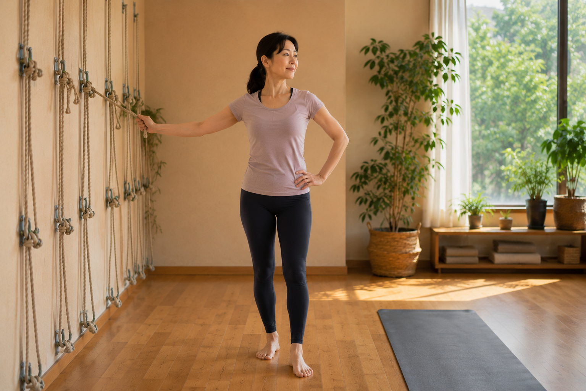

壁繩瑜伽和一般瑜伽差在哪？我現在比較適合哪一種？

- 這不是哪一種比較高級或比較有效，而是支撐方式、練習方式與當下需求不同。
- 這裡主要比較的是壁繩輔助練習和一般墊上瑜伽常見的練習方式；實際難度與調整方式仍會因課程設計與老師而不同。
- 壁繩通常有更明顯的外部支撐與定位，一般墊上瑜伽則較常需要自己維持姿勢、平衡與動作控制。
- 如果你現在還判斷不出來，先看清楚自己的身體狀況，再選擇會更有方向。
如果你現在卡住的不是「要不要練」，而是「壁繩和一般瑜伽到底差在哪、我比較適合哪一種」，先抓住一個原則就好：差別通常不在誰比較高級，而在你現在比較需要什麼樣的支撐、節奏與練習方式。
先講結論：兩種都可以是好的練習，差別在你現在需要什麼
這裡主要比較的是壁繩輔助練習和一般墊上瑜伽常見的練習方式。壁繩通常會提供更明顯的外部支撐與定位，一般墊上瑜伽則較常需要自己維持姿勢、平衡與動作控制。這不代表哪一種一定比較難或比較有效，實際難度和調整方式仍會因課程設計與老師而不同。
壁繩瑜伽和一般墊上瑜伽，通常會差在哪？
| 比較維度 | 壁繩瑜伽 | 一般墊上瑜伽 |
|---|---|---|
| 支撐方式 | 通常可利用繩帶提供外部支撐、借力與定位。 | 較常依靠自己的身體去維持姿勢與移動。 |
| 動作控制 | 有支點可參考時，較容易先理解怎麼出力。 | 通常需要一邊感受身體、一邊自己維持控制。 |
| 平衡需求 | 有些動作會先降低平衡壓力，讓注意力回到位置感。 | 較常需要同時顧呼吸、平衡和動作節奏。 |
| 調整方式 | 可透過繩帶高度、角度與借力方式做調整。 | 也可以用老師口令、輔具或動作變化調整，但通常較依賴當下控制能力。 |
| 比較適合的當下需求 | 想先有比較明顯的支撐，或想更快理解身體位置的人。 | 喜歡較連續的動作、流動感與自主探索的人。 |
壁繩通常會先給你比較明顯的支撐與定位；一般墊上瑜伽則較常讓你在動作中自己維持控制。差別不是好壞，而是你現在比較需要哪一種練習條件。
如果你現在比較在意這些，壁繩可能會更適合
- 你想先有比較明顯的支撐，不想一開始就把注意力都放在撐住和平衡上。
- 你常搞不清楚身體位置，想透過繩帶理解怎麼借力與出力。
- 你做動作時容易因為怕做不到而硬撐，想先用比較有定位感的方式開始。
如果你現在比較喜歡這些，一般瑜伽也很適合
- 你喜歡較連續的動作和流動感，想在不同體式之間探索節奏。
- 你希望增加自主控制與動作經驗，練習時喜歡自己感受身體怎麼回應。
- 如果你已經有一些動作經驗，通常也會更容易適應需要自己維持控制的練習。
身體很硬、沒基礎，該怎麼選？
如果你身體比較緊、又沒有太多練習經驗，可以先想一件事：你現在比較需要有人或工具幫你建立支撐與位置感，還是比較喜歡在動作中慢慢自己探索？如果你特別擔心身體很硬、沒基礎，可以再看身體很硬、沒基礎，為什麼反而更適合壁繩。
如果你其實還沒完全理解壁繩本身是什麼，也可以先回到壁繩瑜伽是什麼？適合誰？認識壁繩的支撐與練習方式看總論。

如果你還判斷不出來，先看清楚自己的身體狀況
兩種方式沒有絕對好壞，差別往往在你目前的身體狀況和需求。AI 體態檢測能先把「我到底卡在哪」變得更清楚，之後要選擇哪種練習，也比較有方向。
預約首次 NT$199 AI 體態檢測本文為體態與姿勢的一般衛教與練習分享，非醫療診斷或治療。若有疼痛、舊傷或特殊病史，請先諮詢合格醫療專業人員。
常見問題
壁繩瑜伽和一般瑜伽最大的差別是什麼？
這裡主要比較的是壁繩輔助練習和一般墊上瑜伽常見的練習方式。壁繩通常會提供更明顯的外部支撐與定位，一般墊上瑜伽則較常需要自己維持姿勢、平衡與動作控制；實際難度和調整方式仍會因課程設計與老師而不同。
壁繩怎麼提供支撐？
繩帶通常可以幫你分擔一部分重量、提供支點借力，也比較容易讓你感覺身體位置，練習時不必同時把所有注意力都放在撐住和平衡上。
什麼情況可能比較適合壁繩瑜伽？
如果你現在比較想先有明顯支撐、常搞不清楚身體位置，或做動作時容易因為怕做不到而硬撐，壁繩通常會是比較友善的選擇。
什麼情況一般瑜伽也很適合？
如果你喜歡較連續的動作與流動感，也想多累積自主控制和不同體式之間的經驗，一般墊上瑜伽也很適合；已有一些動作經驗的人，可能更容易適應需要自己維持控制的練習。
身體很硬、沒基礎怎麼選？
如果你身體比較緊、又沒有太多練習經驗，可以先想一件事：你現在比較需要有人或工具幫你建立支撐與位置感，還是比較喜歡在動作中慢慢自己探索？如果你特別擔心身體很硬、沒基礎，可以再看身體很硬、沒基礎，為什麼反而更適合壁繩。